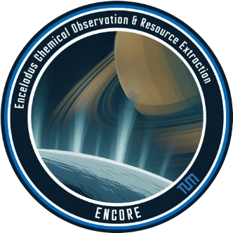
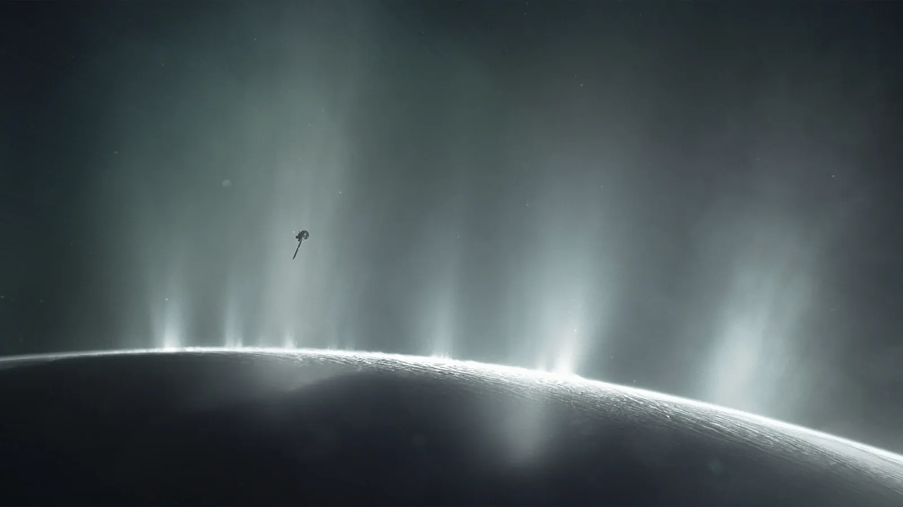
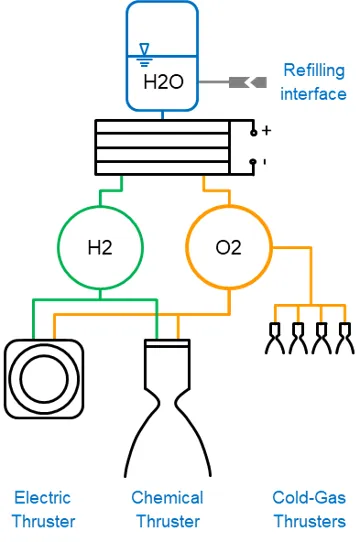
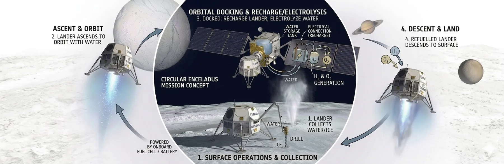
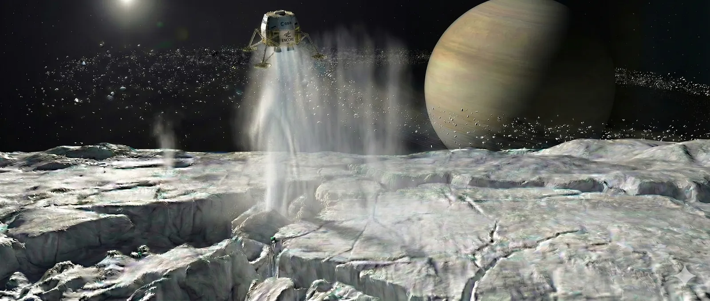

ENCORE: a mission to Enceladus that makes its own propellant
ENCORE (ENceladus Chemical Observation & Resource Extraction) is a candidate ESA L-Class mission within Voyage 2050, designed to return definitive evidence of life from Saturn's moon Enceladus. An orbiter and a hopping lander harvest Enceladus ice and electrolyse it into propellant, which makes extended surface operations and even a sample return possible.

Fly the mission
Press play or drag the timeline. The budget panel follows the Δv and surplus oxygen from the thesis; the orbits and timing are a schematic of the sequence, not a propagated trajectory.
Launch
EVVES baseline trajectory adapted from Fantino et al. (2023). Budget values are from an earlier design iteration in the thesis (electric propulsion at Isp 3000 s with a krypton neutraliser); later iterations assume about 1500 s.
An ocean that sprays itself into space
On a close flyby of Enceladus' south pole, Cassini found plumes of water vapour and ice erupting from four parallel fissures, the "tiger stripes". Beneath the ice sits a global liquid ocean, with hydrothermal activity and complex organic molecules: liquid water, an energy source and the right chemistry.
No spacecraft has ever landed there. ENCORE's science goals centre on biosignature detection, habitability, surface mapping, interior structure and plume dynamics.


Water in, two kinds of thrust out
Water is dense, benign and easy to store. Solar power runs an electrolyser that splits it into hydrogen and oxygen, which fill high-pressure buffer tanks before each burn. The tank capacity caps each burn, so large manoeuvres are split into a series of smaller ones.
The chemical engine burns fuel-rich, while electrolysis always yields oxygen and hydrogen at 8:1 by mass. The leftover oxygen is not wasted: it becomes reaction mass for electric thrusters. That makes ENCORE a hybrid chemical-electric mission, with high thrust where it matters and high efficiency for the long cruise.
Of the electrolyser technologies compared, capillary-fed electrolysis suits the mission environment best but still needs development, so low-temperature electrolysis is the current baseline.
An orbiter and a lander that hops
The trade study rated each architecture by how far it advances science beyond Cassini-Huygens, alongside its ability to use local resources and to return samples. A separate orbiter and lander scored highest because the lander can refuel from the ice and hop between sites on the South Polar Terrain, while the orbiter maps safe landing zones and relays data to Earth.

